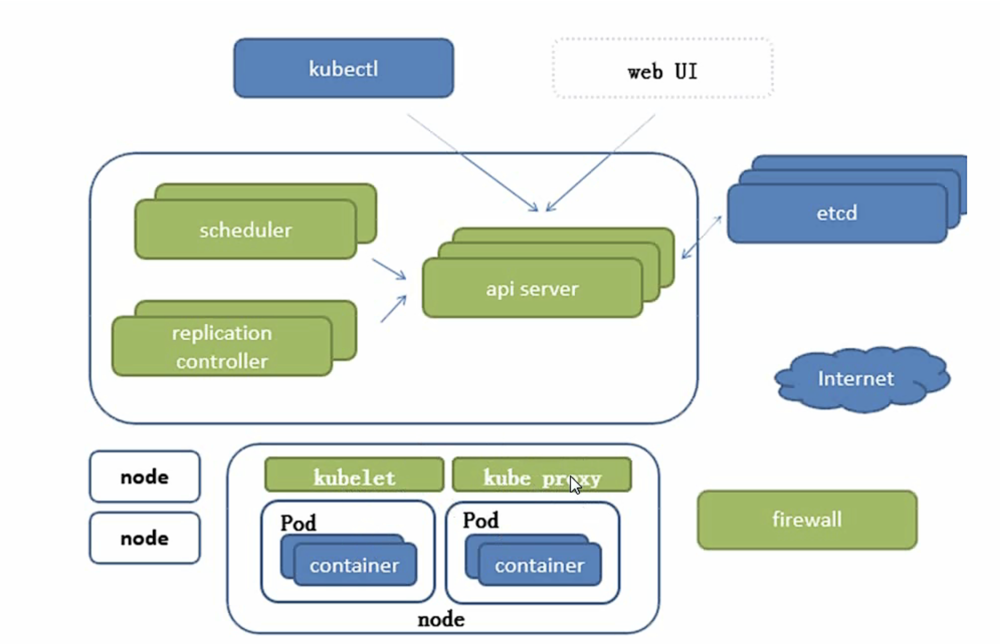

前
最近开始学习k8s，在这里记录一下学习过程
正
k8s架构图

- apiserver : 所有服务访问的统一入口
- replication controller： 维持副本期望数量
- scheduler ： 负责介绍任务，选择合适的节点执行任务
- etcd ： 键值对存储
- kubelet： 与容器引擎（docker）交互，实现容器的生命周期管理
- kubeproxy： 负责写入规则至ipvs，iptables实现服务映射访问
其他组件
- coreDns ： 为集群中的一个svc创建一个域名ip的对应关系解析
- dashboard ： k8s管理访问
- ingress contoller ： 实现7层代理
- fedetation : 提供跨集群的多k8s的统一管理
- prometheus : 监控能力
- elk ： 日志统一分析介入平台
pod
- 自主式pod
- 控制器管理pod
pod的创建，更新通过rc或者rs来实现，一个rs下面有预期的pod数量，当滚动更新时，重新创建一个rs，然后启动一个新版本的pod，关闭一个旧版本的pod。
hpa用于动态的创建pod维持系统可用性，根据系统负载新增或减少pod数量至指定值
etcd
etcd在k8s中的最大作用就是使其高可用，强一致性的键值性存储以及监听机制
在apiserver接收到请求经过一系列的处理后，最终如果是集群所需要存储的信息，就会存储至etcd中。一般存储的是集群的状态信息和元信息。
- 使用代码 ：
staging/src/k8s.io/apiserver/pkg/server/options/etcd.go - 查看etcd命令
kubectl -n kube-system get pods | grep etcd - 进入etcd容器
kuvectl -n kube-system exec -it etcd-minikube sh
controller manager
controller manager 分为kube-controller-manager 和 cloud-controller-manager,其中cloud-controller-manager是为各家云厂商提供一种抽象规范，便于让各家使用各自的provider
kube-controller-manager是嵌入k8s核心控制循环的守护进程，嵌入的意思是内置了相关逻辑，可以独立部署
- 工作原理：
cmd/kube-controller-manager/app/controllermanager.go&&cmd/kube-controller-manager/app/core.go - 查看详情命令：
kubectl -n kube-system describe -l component=kube-controller-manager - 作用 ： 根据apiserver提供的数据持续监控集群，并且将集群调整为预期状态
- 当我们创建一个deloyment，设置副本数为1，当我们把pod删除之后，控制器会创建一个pod
- 查看日志命令：
kubectl -n kube-system logs -l component=kube-controller-manager --tail=5
schedule
kube-schedule是一个策略丰富，拓扑感知的调度程序，会显著提升可用性，性能和容量
作用是将预期的pod资源调度到指定的node上，进而完成启动，通过定时请求apiserver获取信息，然后进行处理
- 工作原理：
pkg/scheduler/core/generic_scheduler.go - 处理阶段：主要分为三个阶段，computing predicate， prioritizing，selecting host
- computing predicate主要解决的问题是pod是否能调度到集群的node上，主要通过一个
podOnFirstNode的函数，处理时会检查缓存和pod是否是可调度的，以防有pod affinity（亲和性）的出现 - prioritizing主要解决的问题是，在上一个阶段的处理结果filteredNodeList中判断优先级，得出一个按优先级排序的队列，优先级的判断是根据各种计算出的分数之和
- selecting host则是最终选择调度到那台机器上
- computing predicate主要解决的问题是pod是否能调度到集群的node上，主要通过一个
kubelet
按照一般架构设计的原则，kubelet应该属于agent，负责node和pod的管理任务
- 节点管理 ： 通常agent的作用就是让节点能注册，让集群知道他的存在，这就是节点管理，kubelet会上报自己的元信息以及对应机器的信息
- pod管理 ： kubelet保证了pod在node按照预期启动并且保持工作，主要做了两件事，健康检查和资源监控
- 工作原理 ：
cmd/kubelet/app/server.go
kube-proxy
kube-proxy是每个node上的网络代理组件，支持tcp和udp的连接和转发
- 工作方式： 分为三种，userspace（早期，效率不足，不推荐使用），iptables（默认，效率比userspace高，但会生成很多iptables规则，ipvs为了解决iptables的性能问题，采用增量的形式更新
container runtime（docker）
容器运行时，由于容器化技术的发展，为了统一工业标准，避免k8s与特定的容器化绑定，成立了oci，致力于将容器运行时和容器镜像化标准化
- docker最初是一个容器管理平台，用于快速创建，发布，运行容器，后来添加了很多功能，成为标准的容器运行时的工具集
- cri： 自k8s1.5开始，新增了一个容器运行时的插件api，成为cri，同步cri可以支持kubelet使用不同的容器运行时，而不需要编译， cri主要是基于grpc实现了RuntimeService和ImageService，接口定义为
pkg/kubelet/apis/cri/runtime/v1alpha2/api.proto， - 基本命令
- 部署一个服务，
kubectl run redis --image=redis - 查看详情，
kubectl describe pod名- 调度 ：
Normal Scheduled 7m ...查看pod调度到哪一个node上 - pull镜像 ：
Normal Pulling 7m kubelet, node01 pulling image "redis" Normal Pulled 7m kubelet, node01 Successfully pulled image "redis" - 创建并启动 ：
创建后登陆到对应node即可通过docker查看容器详情Normal Created 7m kubelet, node01 Created container Normal Started 7m kubelet, node01 Started container
- 调度 ：
- 部署一个服务，